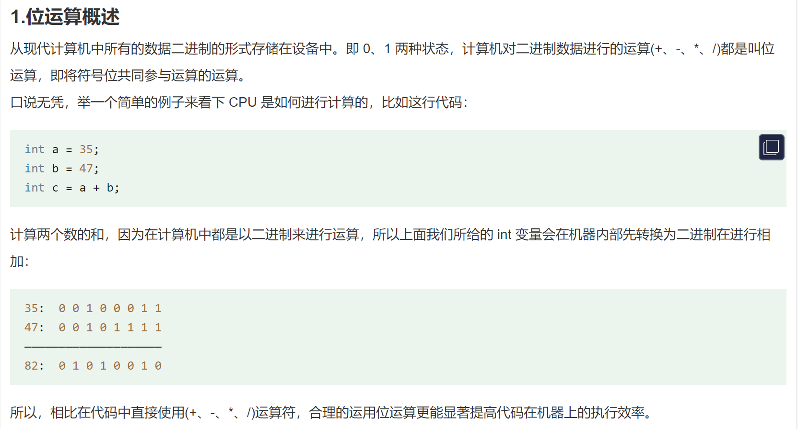
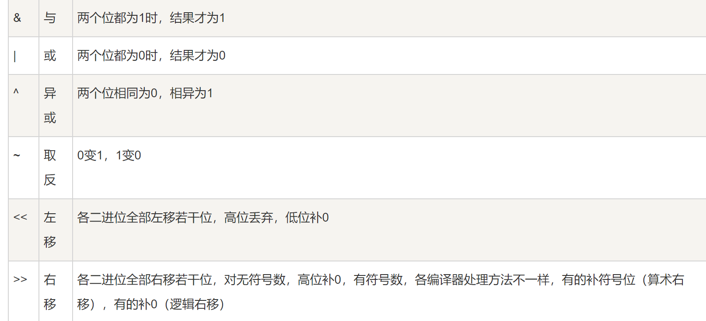
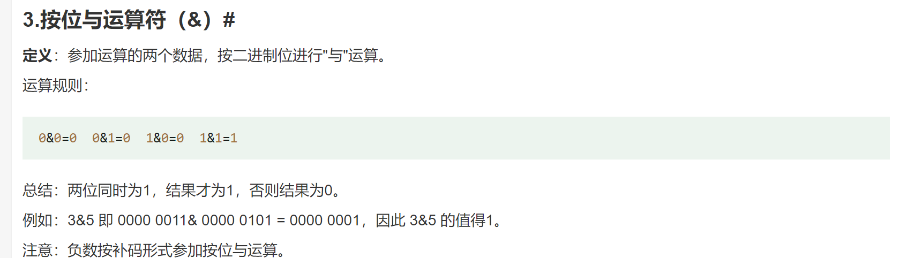
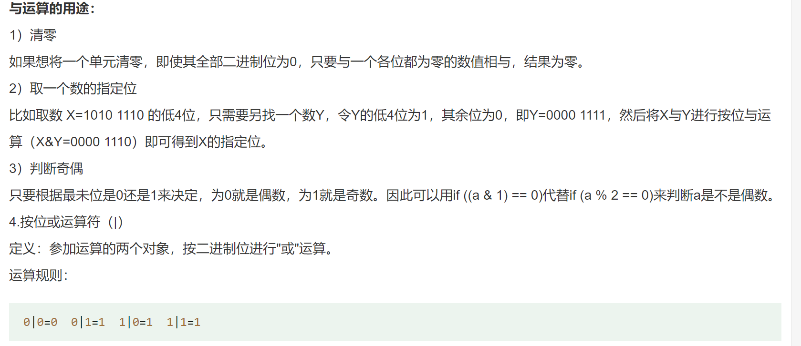
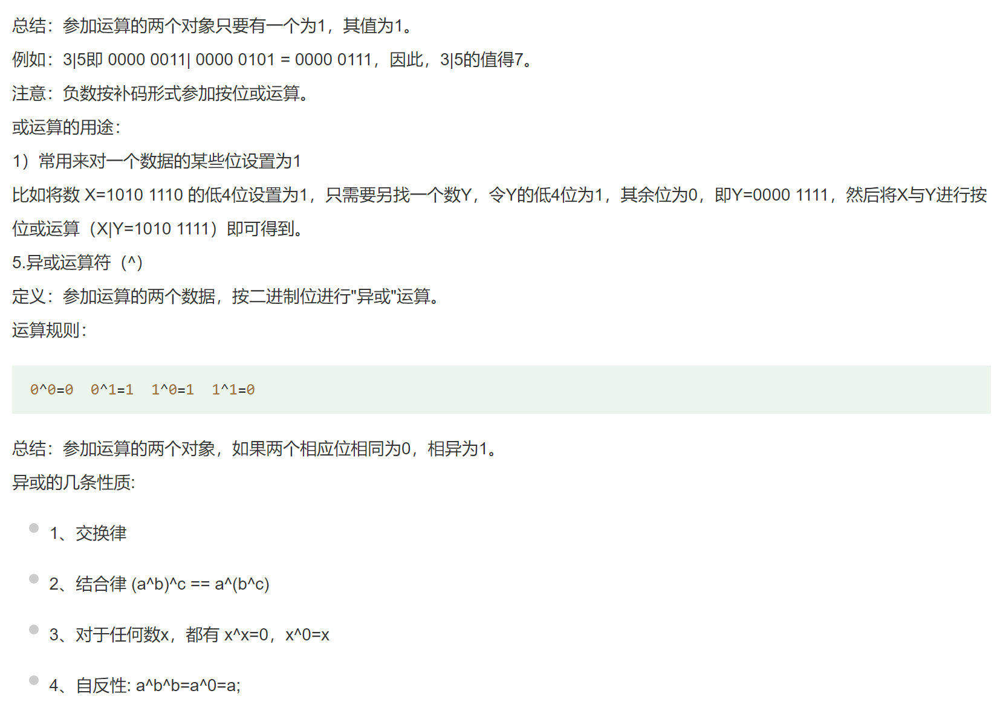
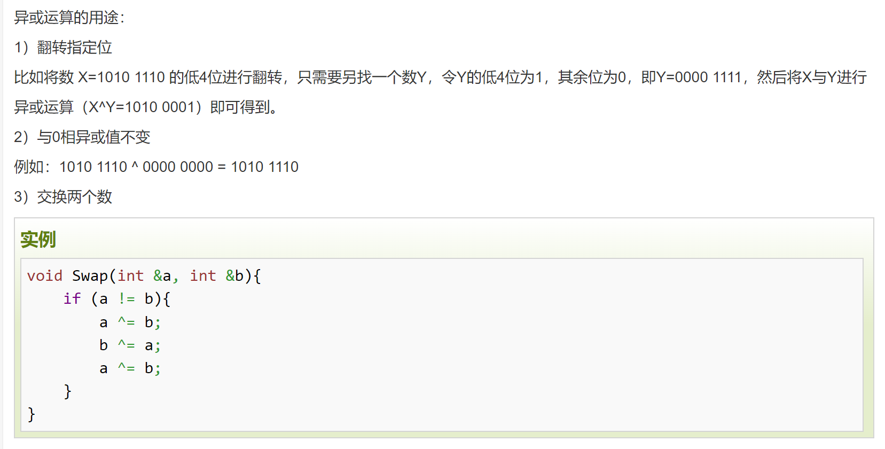
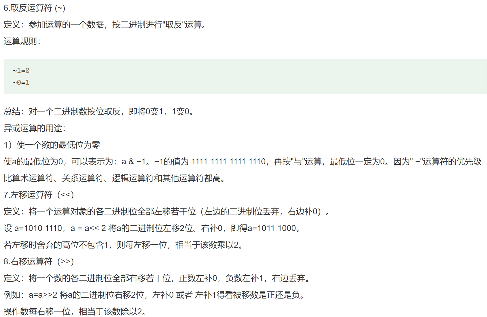
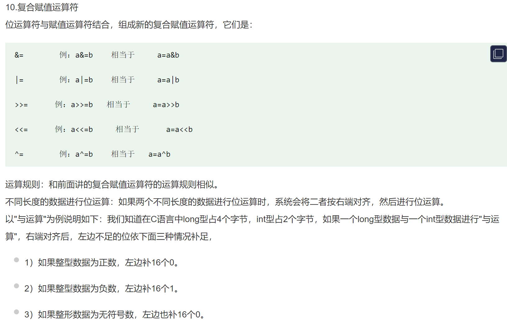
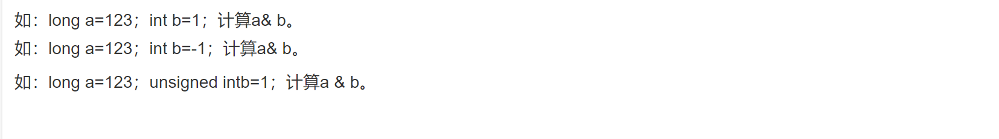

文章
7
标签
4
分类
6
首页
文章
归档
标签
分类
友链
留言板
关于
erdong
搜索
首页
文章
归档
标签
分类
友链
留言板
关于
位运算符号
发表于
2024-07-10
|
更新于
2024-07-10
|
位运算
|
字数总计:
0
|
阅读时长:
1分钟
|
阅读量:









文章作者:
erdong
文章链接:
https://erdong27.github.io/2024/07/10/位运算符号/
版权声明:
本博客所有文章除特别声明外，均采用
CC BY-NC-SA 4.0
许可协议。转载请注明来自
erdong
！
计算机基础
上一篇
HashMap集合简介
下一篇
从0开始搭建hexo
评论
erdong
JAVA后端开发攻城狮。
文章
7
标签
4
分类
6
Follow Me
公告
本站所有博文均是博主的学习笔记与个人理解。
最新文章
获取方法参数名
2024-07-10
BeanFactory容器的实现
2024-07-10
ConfigurableApplicaionContext
2024-07-10
HashMap集合简介
2024-07-10
位运算符号
2024-07-10
簡
搜索
数据库加载中